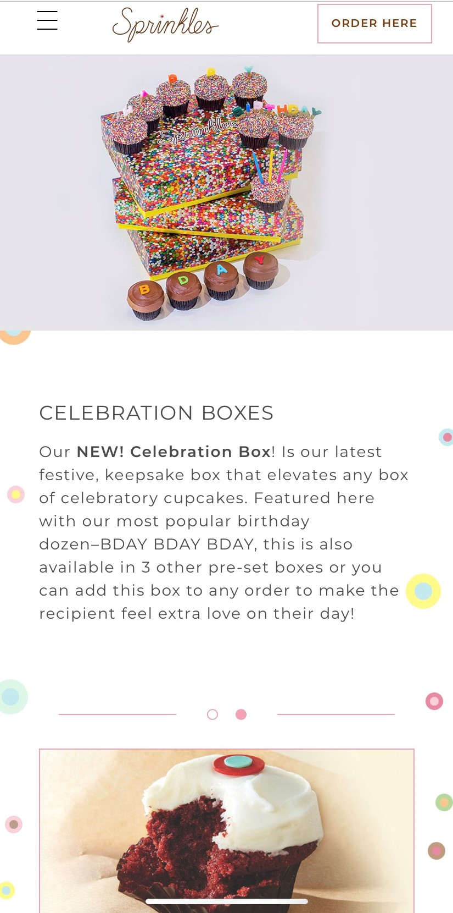

Hick's Law
Bath and Body Works

Bath and Bodyworks is a great example of Hick's Law, which states that the time and effortit takes to make a decision, increases the number of options. The fact that there are so many option on the home page alone, can pretty much guarantee people staying on the site longer beause more options has pretty much made "get in get out" non-existant.
White Space and Clean Design
Sprinkles Cupcakes
The cupcakes are the stars on the Sprinkles website. They do a great job of utilizing clean lines and white Space to make a website that puts all the focus on the product.
Alignment
Petco
The Petco website shows lots of alignment in not only their text, but how pictures are aligned and spaced. The alignment not only brings everything together to look cohesive, but it also is organized nicely and make your eyes flow down the page instead of all over.